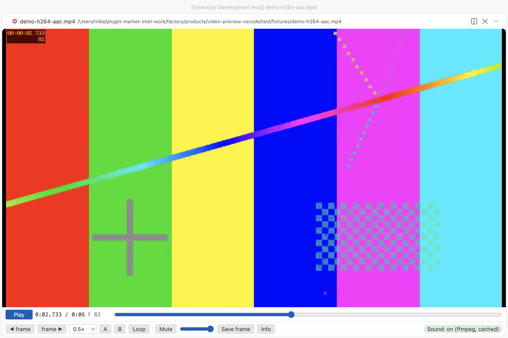
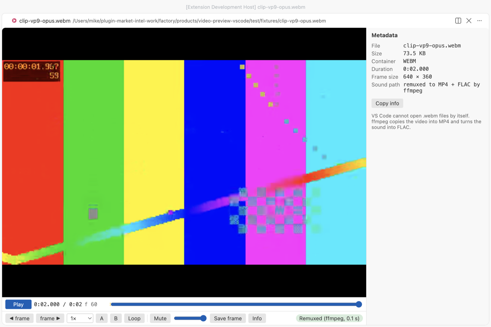

MP4 Video Player & Video Preview with Sound
MP4 Video Player & Video Preview with Sound, a VS Code extension by Zovo
Click an .mp4, .mov, .mkv or .webm file and it plays in a video player inside VS Code with its sound, which VS Code's own player leaves out for AAC audio.
Free, MIT license. Needs VS Code 1.90.0 or newer. Extension ID zovo.video-preview-with-sound, version 0.1.5.

Real output from VS Code 1.142 on macOS. scripts/e2e-vscode.mjs opened the 6-second sample from scripts/make-samples.js with this extension, clicked Play, set the loop with the A and B keys and took the window screenshot over the Chrome DevTools protocol. The webview measured the sound level at 0.12 RMS while it played. VS Code's own player gives 0 on the same file.
- You hear the sound. VS Code can show H.264 video but has no AAC decoder, and most MP4 and MOV files use AAC. This extension decodes the sound to FLAC with a program you already have (afconvert, which comes with macOS, or your own ffmpeg) and keeps it in step with the picture. In our tests the drift stayed under 0.1 s.
- It's built for checking clips frame by frame. Step one frame at a time, play at 0.1× to 4×, loop between two points, and save the exact frame as a full-size PNG. The frame counter matches the frame number that ffmpeg burned into the test video.
- It opens files VS Code can't open at all. VS Code's player has no MKV or WebM support. With ffmpeg installed, the video stream is copied into MP4 without re-encoding (0.1 s for our samples) and plays with sound.
Quick start
- Install Video Preview with Sound. On Windows run
winget install ffmpeg, on Linuxsudo apt install ffmpeg. macOS needs nothing, though ffmpeg (brew install ffmpeg) is faster and adds MKV and WebM. - Click a video in the Explorer and press Space.
If VS Code asks which editor to use for .mp4, pick "Video Preview with Sound" (VS Code has its own simple preview too). Run "Video Preview: Get Started" from the Command Palette for a short tour.
Questions people ask
Is MP4 Video Player & Video Preview with Sound free?
Yes. MP4 Video Player & Video Preview with Sound is free and MIT licensed.
How do I install MP4 Video Player & Video Preview with Sound?
Click "Install in VS Code" above, or search for zovo.video-preview-with-sound in the Extensions view.
Why VS Code mutes your videos
VS Code's built-in Chromium ships with the H.264 video decoder but without AAC. We tested this on VS Code 1.142 (Electron 43, Chrome 150) before writing any player code. canPlayType and WebCodecs both say AAC is supported, but decoding fails, and the audio element reports 0 decoded bytes. MP3, FLAC and WAV sound do play. So the extension reads the codec from the file header and picks one of these paths.
| The file has | What happens | Helper |
|---|---|---|
| H.264, HEVC or VP9 video with MP3 or FLAC sound | VS Code plays it directly | none |
| AAC, AC-3, E-AC-3, Opus or ALAC sound in MP4, M4V or MOV | the sound is decoded to FLAC and plays next to the muted video | afconvert (macOS) or ffmpeg |
| MKV or WebM | video copied into MP4, sound converted to FLAC, one file | ffmpeg |
| no audio track | plays, and the chip says "No audio track" | none |
The FLAC file goes into the extension's own storage folder and is reused next time, so a file is only decoded once. The cache keeps the newest 2 GB by default. "Video Preview: Clear Sound Cache" empties it.

Controls
| Key | Action |
|---|---|
| Space or K, or click the picture | Play or pause |
, and . | One frame back or forward |
| Left and Right | 5 s back or forward (with Shift, 1 s) |
[ and ] | Slower or faster, 0.1× to 4× |
| A, then B | Set the loop start and end. The loop turns on and shows on the seek bar |
| L | Loop on or off |
| M | Mute |
| S | Save the current frame as a PNG at the video's full size |
| I | Show or hide the metadata |
The metadata panel shows container brands, duration, codec, frame size, frame rate, frame count, bitrates, sample rate, channels and language, read by mp4box.js from the file header. "Copy info" puts it on the clipboard as plain text. Frame PNGs get a name like clip-00m12s345-f370.png, so you can tell later where they came from.


Settings
| Setting | Default | What it does |
|---|---|---|
videoPreview.soundHelper | auto | auto uses ffmpeg if it's found, else afconvert on macOS. ffmpeg, afconvert or off force one choice |
videoPreview.ffmpegPath | empty | Full path to ffmpeg. Empty means search PATH, /opt/homebrew/bin and /usr/local/bin |
videoPreview.decodeSoundAutomatically | true | Off means the helper waits for a click on "Turn on sound" |
videoPreview.maxDecodeSizeMB | 4096 | Bigger files still play, without sound, and the chip says why |
videoPreview.cacheSizeMB | 2048 | Disk space for decoded sound and remuxed files |
videoPreview.helperTimeoutSeconds | 900 | The helper is stopped after this long |
videoPreview.askForRating | true | Ask one time for a Marketplace rating, after 5 files and 2 days. Turn it off with false |
videoPreview.showSupportLinks | true | Show the small Sponsor and More free viewers links under the player controls |
Privacy and safety
The extension makes no network calls and has no telemetry. The webview runs under a strict Content Security Policy with no inline or remote scripts, and file names and metadata are only ever set as text. Nothing in a video file is run. The helper is started with an argument list and no shell, ffmpeg reads the input through file: so a crafted file name can't act as an option or protocol, and closing the tab stops it. In an untrusted workspace no helper starts until you click "Turn on sound". ffmpeg isn't bundled, so no GPL or LGPL code ships with this extension.
Known limits
- Big files stream from disk and the picture starts at once, but the sound has to be decoded first. For a 1-hour AAC track that took 5.7 s with ffmpeg and 17.8 s with afconvert on an M-series Mac. The video plays muted until the chip says "Sound: on".
- FLAC is large. That 1-hour track became about 370 MB in the cache, so the 2 GB default holds roughly five hours of sound.
- The separate sound track is nudged when it drifts more than 0.04 s from the picture and moved back when it drifts more than 0.25 s. MKV and WebM stay tighter, because they play as one remuxed file.
- MKV and WebM with VP8 or Theora video can't be copied into MP4. You'll get the ffmpeg error message instead.
- HEVC needs hardware decoding, which macOS has. AV1 depends on your GPU.
- Remote and virtual workspaces play the video, but the helper only runs on local files.
.aviisn't opened. VS Code can't read it and remuxing usually needs a re-encode.
License
MIT. mp4box.js is BSD-3-Clause, see THIRD-PARTY-NOTICES.md.
Install MP4 Video Player & Video Preview with Sound
Click the button to open VS Code and install it, or press Ctrl+P (Cmd+P on macOS) in VS Code and run ext install zovo.video-preview-with-sound.
Free, MIT license. Needs VS Code 1.90.0 or newer. Extension ID zovo.video-preview-with-sound, version 0.1.5.
Source code and issues are on GitHub.
Support this work
If this extension saves you time, you can support the work on GitHub Sponsors. Monthly tiers start at $5, and one-time tiers start at $15. Sponsorship is optional, and the tool works the same without it.